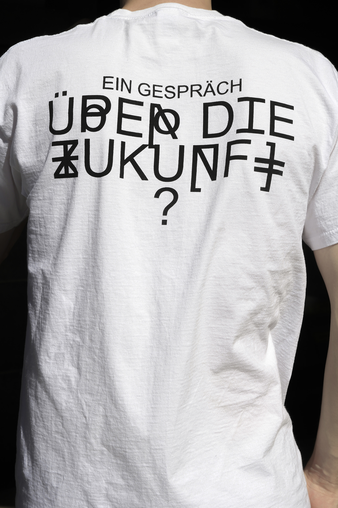
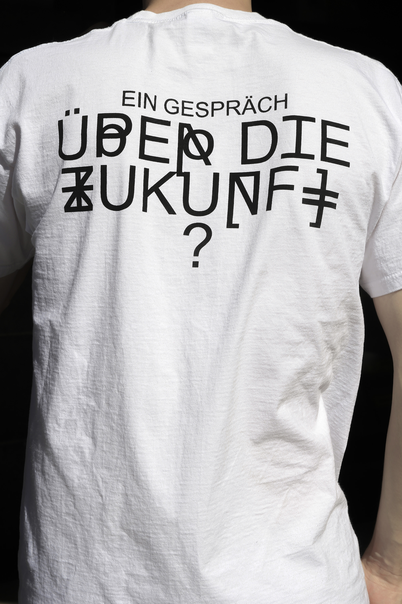

About +
Graphic and web designer who codes. Live typography, design identities, strategy brands. Based in Linz, AT.
Feel free to get in touch for enquiries, collaboration requests, additional information.
Contact +
ivan@sukhov.xyz
@jukka_w
@jukka_w
Awards +
Joseph Binder Awards Silber 2025
Type Directors Club 2025
Creative Club Austria 2025
Type Directors Club 2025
Creative Club Austria 2025
Projects +
gerhardkirchschleager.at +
A personal website for graphic designer Gerhard Kirchschleager, designed as a digital business card with typographic interventions and integrated device movement sensor.
Credits +
ARDC Magazine +
ARDC Magazine Issue #0. This publication presents a series of conversations with key figures from the servus.at network and communities within radical net cultures around the Art Meets Radical Openness Festival.
Credits +


ÖH Kunstuni Linz +
Redesign Campaign. Reduced, open, bilingual, neutral. The new design of the Students‘ Union of the University of Arts Linz creates a clear and accessible identity for all students.
Credits +


p5.js Sketches +
Rapid, playful p5.js sketches that riff on letterforms and layout with controlled randomness—letters drift, collide, and glitch in ever-changing arrangements.
Credits +
FPS Archive +
Since 2021, building an archive and teaching format in collaboration with Filmacademy Vienna, The Academy of Fine Arts Stuttgart, Angewandte Vienna and Kunstuni Linz.
Credits +
Languages Book +
A visual exploration of the world’s endangered languages, turning fading words into striking imagery.
Credits +
Future Displays +
Wooden displays featured at the “Future” station during the Radical Times exhibition, with audience participation and silkscreen printing.
Credits +

 
